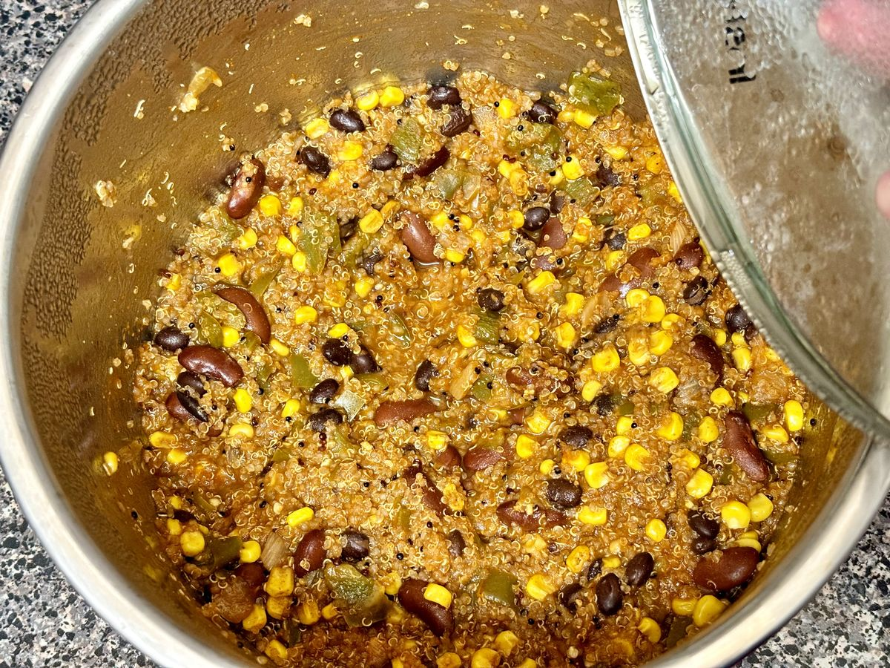

Based on https://showmetheyummy.com/instant-pot-vegetarian-chili-recipe/#recipe
Personal rating: 4 / 5

2 green bell peppers, diced
1 medium yellow onion, diced
1 jalapeno, minced
4 cloves garlic, minced
1.5 Tbsp chili powder
3/4 Tbsp smoked paprika
1 tsp ground cumin
1 tsp salt
2.5 cups low-sodium vegetable broth
1 (8 oz) can tomato sauce
1/2 cup quinoa
1 (15 oz) can black beans, rinsed
1 (15 oz) can kidney beans, rinsed
1 (15 oz) can corn, rinsed
avocado
cilantro
green onions
lime juice
sour cream
cheese
tortilla chips